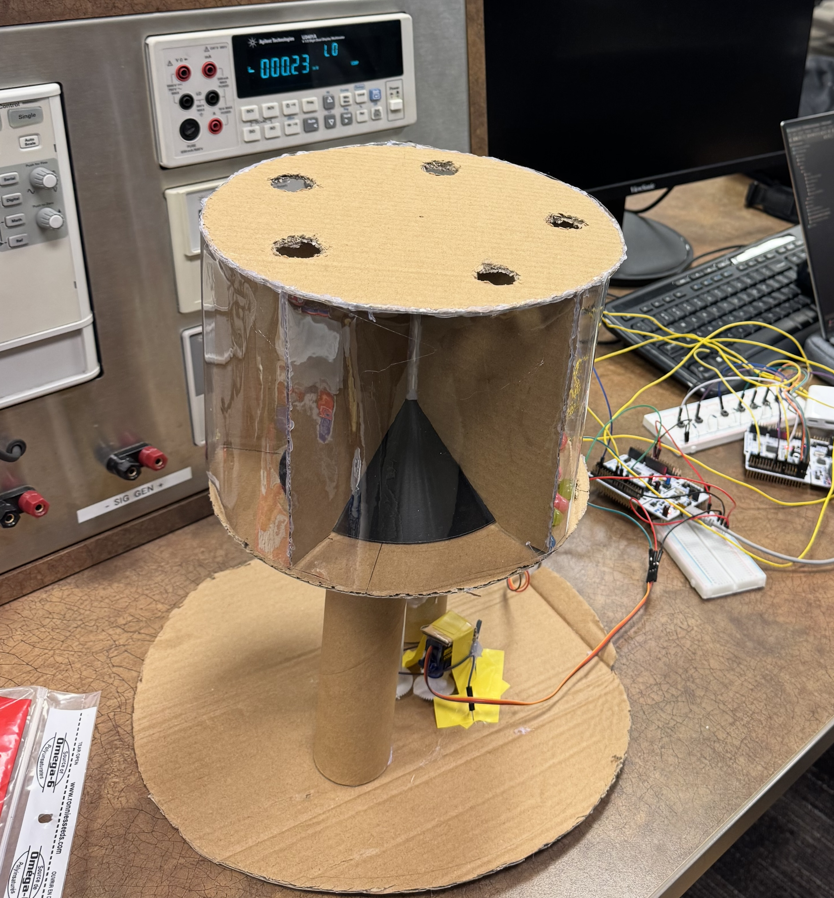

Automated Medicine Dispenser
STM32, C++, Embedded Systems, Testing Reliability
Developed an STM32-based automated medication dispenser for elderly care, focusing on reliability, precision, safety, and continuous operation.

- Achieved 99.5% dispensing accuracy across 200+ test cycles
- Reduced dispensing errors by 85% using optimized servo control algorithms
- Maintained ±0.1g precision for medication dosing
- Integrated safety sensors and error-handling protocols to prevent double-dose incidents
- Analyzed 200+ test-cycle datasets using Python to identify failure patterns